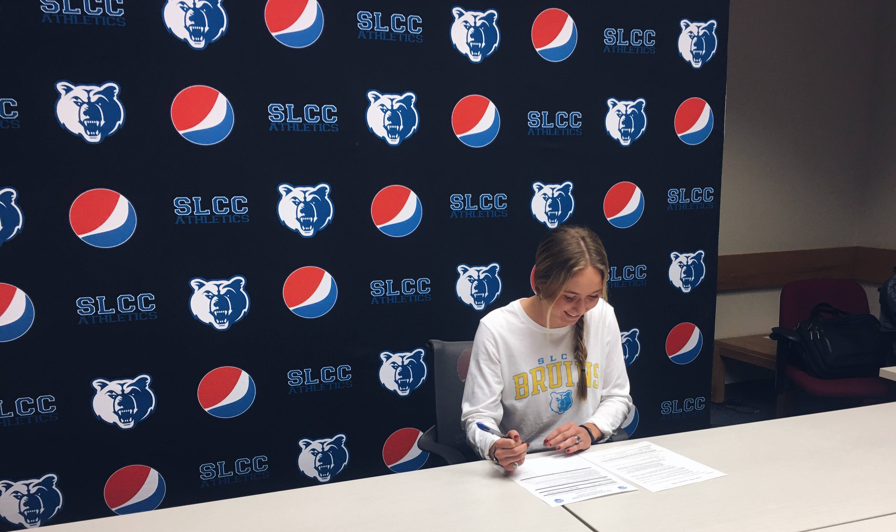
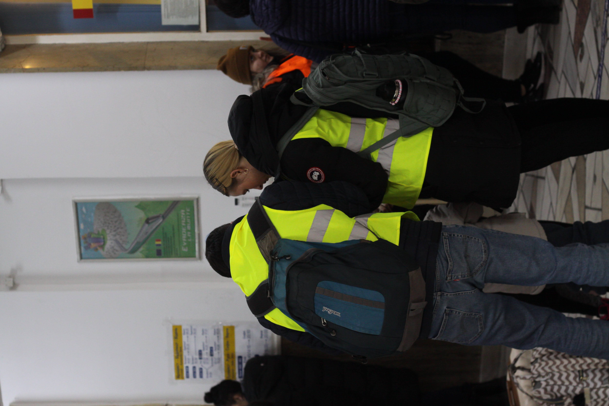
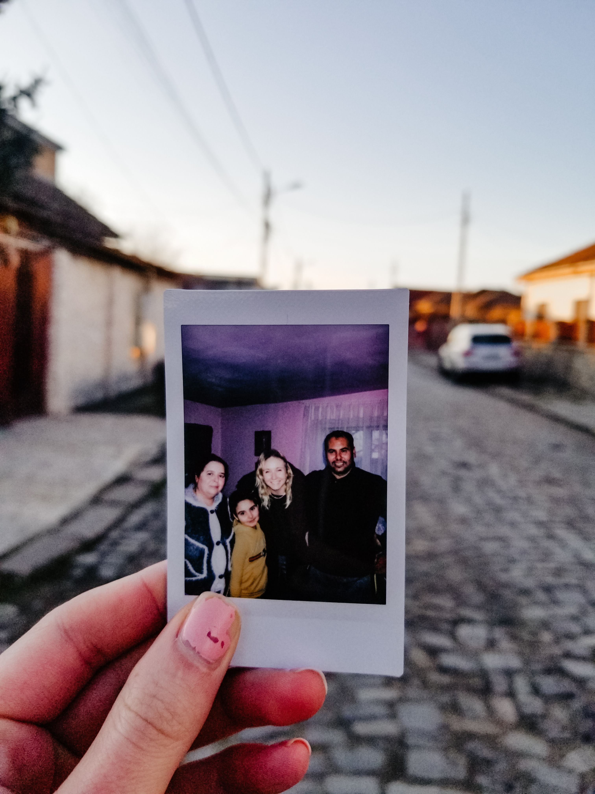
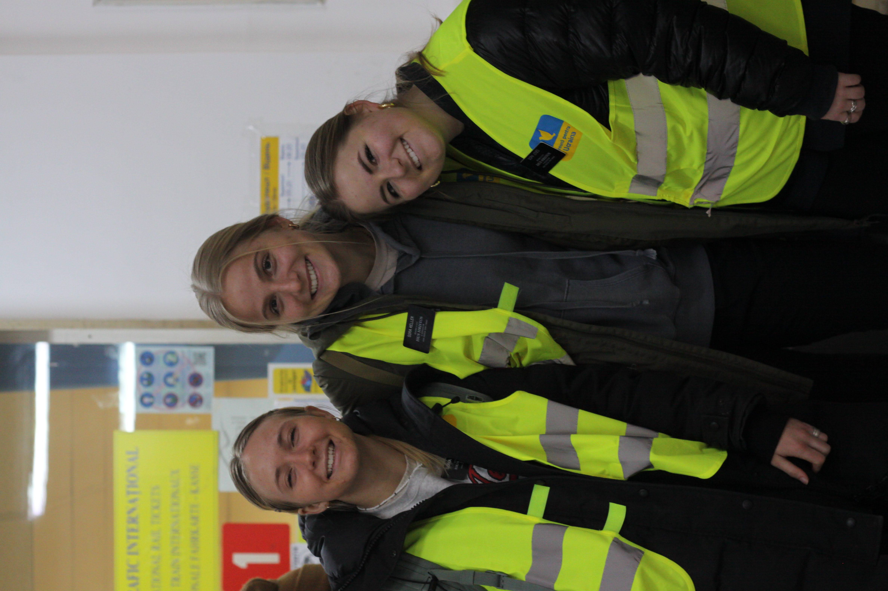

Life and Work Experience
WORK EXPERIENCE
Cozy Earth, Bluffdale, Utah- Customer Service team lead/Marketing Intern
Working as a team lead as well as a marketing intern at a luxury bamboo bedding company. Led the customer service team by helping with scheduling, speaking with dissatisfied customers, correlating marketing efforts, as well as taking part in company-wide marketing/public relations projects.
Oncourse CRM, Draper, Utah- Sales team representative
Worked as a sales team representative for Oncourse CRM, represented the company on LinkedIn, making online connections with people to schedule demos of the CRM product. Also helped in the process of marketing the tool to known business owners by examining their website efficiency.
Church of Jesus Christ of Latter-day Saints— Romania- Social media marketing specialist
As a missionary in Romania, I was chosen to lead the mission in our social media efforts under the direction of the APs. We were given full reign over the ads ran on Facebook for the entire country. We created the ads as well as created and adjusted audiences used to reach our desired audience. I received great training from the church’s professional marketing teams.


EDUCATION
BYU Pre-Communiations Major
Salt Lake Community College— Associates of science degree
9/2019-12/20
Member of the SLCC Women’s Soccer Team
3.72 GPA
Corner Canyon High School, Draper, Utah—
2015-2019
3.9 GPA

VOLUNTEER WORK
Missionary service in Romania for 18 months.
I served in the major cities of Brasov, Ploiesti, and Iasi, Romania on my mission. I speak the language of Romanian, and count my time there as one of the greatest blessings of my life
Refugee work with Ukrainian refugees
When the war between Russia and Ukraine broke out, I had the incredible opportunity to be a translator for Ukranians coming into Romania at the train station.



<